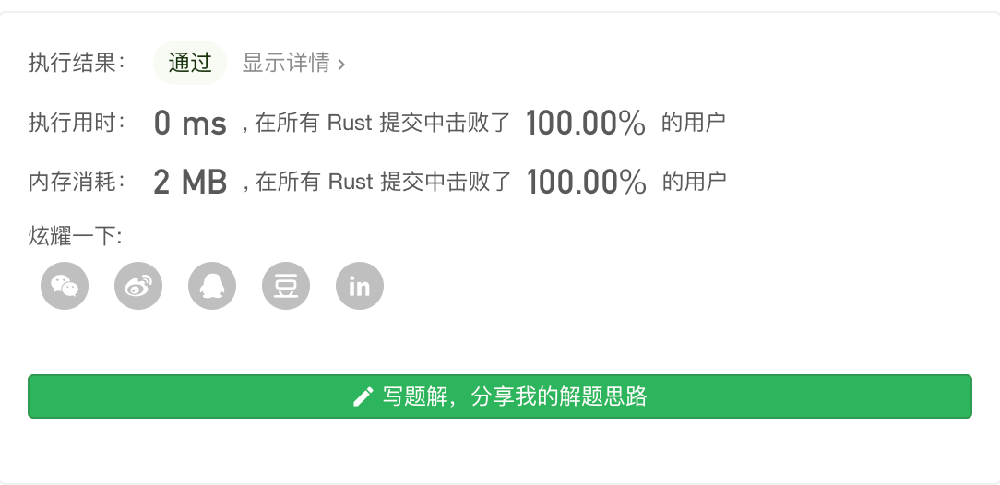

Leetcode第93题 复原IP地址
给定一个只包含数字的字符串，复原它并返回所有可能的 IP 地址格式。
有效的 IP 地址正好由四个整数（每个整数位于 0 到 255 之间组成），整数之间用 '.' 分隔。
示例:
输入: "25525511135" 输出: ["255.255.11.135", "255.255.111.35"]
解题思路
这道题目,我们 可以通过回朔法来解。
首先 题目将ip 分为 4段
我们定义一个 循环 for i in 0...3 代表我们 需要尝试将每一段 ip 取 1位 取2位 取3位 取四位 去尝试。
我们先看看 取一位的情况。 也就是 i 取到0 start 0 end 0 + 0
第一层 我们取[start,start + i]= [0-0]位 此时ip地址为: 2.xxxxx 然后我们到下一层 递归 把 end + 1 当做下一层的start
第二分层 我们就可以取start 为上一层的end => [start,start + i]= [1-1]位 此时ip地址为: 2.5.xxxxx 然后我们到下一层 递归 把 end + 1 当做下一层的start
那么到了第三层 我们同上取 [2-2]位 此时ip地址为: 2.5.5.xxxx 然后我们到下一层 递归 把 end + 1 当做下一层的start
到了第四层 我们同上取 [3-3]位 此时ip地址为: 2.5.5.2xxxx
此时我们已经将 ip分为四段了,但是呢 很明显 end 没到字符串的末尾 显然没有分割 完全,所以就不要管了。
到达 第四层 我们没有 继续递归下去了 所以 for 第四层的for循环继续执行。
取到 [3-3 +1]位 此时ip地址为: 2.5.5.25xxx 不符合
取到 [3-3 +2]位 此时ip地址为: 2.5.5.255xx 不符合
其实这里 可以多加一个判断作为优化,因为 后面 有 5位明显 这里没必要循环下去了。
当 第四层判断为 都不符合 就回到 第三层 取到 2.5.52.xxxx
然后 再次 去 第四层
反正如此反复,直到 嵌套的四层 for 循环结束。
这种做法其实本质上 就是 4个for 循环 等价。
递归 + 回溯
这里我们 额外注意: 每一段 ip 的取值范围 为 0~ 255 我们要过来滤掉 并且某段 如果以 以0 开头 并且2位以上 的我们也要把它去掉 比如 192.01.123.1 , 01不合法。
use std::borrow::{BorrowMut, Borrow}; pub fn restore_ip_addresses(s: String) -> Vec<String> { let mut vv = vec![]; dfs(0 as usize, s.borrow(), 0, String::new().borrow(), vv.borrow_mut()); vv } pub fn dfs(start:usize, s:&String, segment:usize, strs: &String, list:&mut Vec<String>){ //每段ip 取 1~ 3位 for i in 0..3{ // 因为 每一段有 3 种位数取法 所以拷贝一份,比如 2.x 25.x 255.X let mut strs = strs.clone(); //结束为止 let end = start + i; if end < s.len() && segment <= 3{ //截取一段开始位置 到 结束位置的ip strs = strs + s[start..=end].to_string().as_ref(); //范围 为 0 ~ 255 if s[start..=end].parse::<i32>().unwrap()> 255 { continue; } //如果是 0开头的 长度大于等于2 剪掉 if s.as_bytes()[start] == 48 && end - start >= 1 { continue; } //如果 匹配的字符串 符合 能分成 4段 并且 已经分割到末尾了 if end == s.len() -1 && segment == 3 { list.push(strs.parse().unwrap()); }else{ //把 一段 ip 保存 递归 strs.push(".".parse().unwrap()); dfs(end + 1, s, segment + 1, strs.borrow(), list.as_mut()); } } } } fn main() { let mut m = "172162541".parse().unwrap(); let res = restore_ip_addresses(m); println!("{:?}",res); }